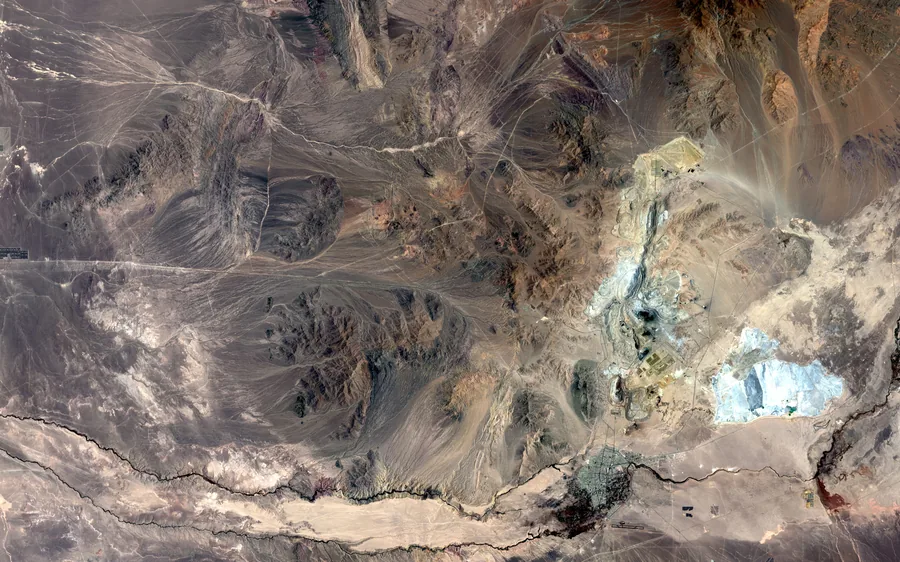
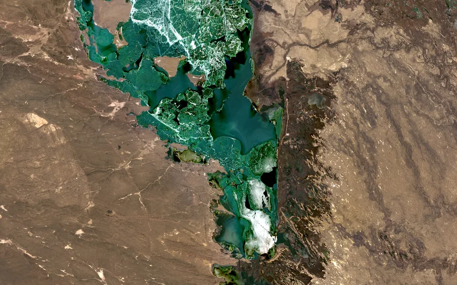

Earth data. Evidence. Priority.
Know where to look next.
OrbGSS turns Earth observation and geoscience data into evidence-backed spatial priorities that help teams decide where to investigate next.
Kızıldere — Büyük Menderes graben, Denizli, Türkiye 37.9794° N, 28.7907° E Rendered orbital sequence — not sensor imagery

A real area, before any analysis.
Kızıldere sits in the Büyük Menderes graben in Denizli, Türkiye. This is the area as Landsat 8 photographed it — the ground the whole pilot is registered to, before a single layer is derived from it.
Earth-observation context only. This is a natural-colour photographic composite of the area, not analytical evidence, not a scored input, and not the acquisition date of any evidence layer.
Three layers over the same ground.
The frame never moves. Same ground, same grid, same projection — only the evidence inside it changes, which is what makes the layers comparable at all.


Elevation
The shape of the ground — the valley floor, the ridges that bound it, and what the evidence layers sit on.
Context and display only. Terrain is not a scored predictor and carries no universal geothermal-favourability direction.
Thermal anomaly
Where the surface runs warmer or cooler than the rest of the area.
Evidence layer only. Do not describe it as geothermal probability, reserve, discovery, or drilling-success evidence.
Alteration signal
Where the surface reflects light the way chemically altered rock tends to.
Broad Sentinel-2 spectral alteration proxy; not mineral identification and not proof of hydrothermal alteration.
Data gap Structural and geological evidence would sharpen interpretation here. OrbGSS has no public-safe fault or lithology layer for this baseline, so the gap is stated rather than filled — it is optional support and does not change the priority result.
How the layers are builtWhere to look first.
The thermal and alteration evidence is combined into one ranking surface across the area of interest, 0 to 100, so a team can order the ground instead of guessing at it. High values mean “look here before there” — inside this area, for this baseline.


- What it is
- A within-area ranking of ground from 0 to 100, derived from the mapped evidence layers above.
- Why it matters
- It turns a 36 × 36 km area into an ordered shortlist before anyone travels to it.
- What it is for
- Deciding where to investigate next, with the evidence and its provenance attached.
- What it is not
- AOI-relative experimental screening only. Not probability, reserve/resource estimation, discovery likelihood, drilling-success likelihood, Full Prospectivity, or a calibrated cross-AOI score.
Inspection aid
Hold a layer against the photograph.
Wipe between the natural-colour view of the area of interest and one derived layer over the same ground. It is a way to look, not a published figure — and nothing on either side is filtered or recoloured.

A visual inspection aid, not a published report figure. Both sides are the files published above, on the same 36 × 36 km frame and the same 30 m grid; the wipe changes nothing about either. The published figures are the ones above.
One workflow, applied where the evidence supports it.
The same evidence-to-priority workflow, read against different ground. Each domain states where it actually stands, and nothing in development is presented as a finished product.
-

Geothermal
Evidence-backed prioritization of geothermal exploration ground — the application the workflow above was built and published against.
Active · First application
-

Mining
The same evidence-to-priority workflow extended to mineral exploration targets.
In development
-

Marine
Coastal and marine ground read as spatial evidence on the same footing.
In development
Illustrative The three photographs above are public-domain Landsat scenes of other places, chosen to show the kind of ground each domain reads. They are not OrbGSS analytical outputs, not results, and not the Kızıldere pilot area.
Why it holds up
Method, stated plainly.
Six commitments that govern what OrbGSS publishes. None of them is a performance claim.
-
Evidence-backed screening
Priorities are derived from mapped layers, not from an unexplained model output.
-
Traceable provenance
Every published visual maps back to a source dataset and a recorded export.
-
Explicit data gaps
Where a layer does not exist, the absence is published in place of an invented one.
-
AOI-first analysis
One declared area, one projection, one grid — comparability before interpretation.
-
Remote narrowing
Large areas are ordered from orbit before field time is committed to them.
-
Decision support
OrbGSS helps decide where to investigate. Field investigation remains necessary.
No accuracy, performance, deployment, customer or scale figures are published for this baseline.
Company
OrbGSS — Orbital Geo-Spatial Solutions
OrbGSS is a geospatial-intelligence platform built by VirgaSoft. It exists to make exploration and land decisions evidence-based, traceable and easier to prioritize.
Built by VirgaSoft
How we work
- Traceable provenance Every output can be followed back to its source data.
- Explicit data gaps Missing or weak inputs are shown, not hidden.
- Evidence-based outputs Priorities are derived from mapped evidence, with the reasoning attached.
- Decision support, not replacement OrbGSS helps decide where to investigate. Field investigation remains necessary.
Contact
Let's talk about where to look next.
For pilot, partnership and technical conversations.